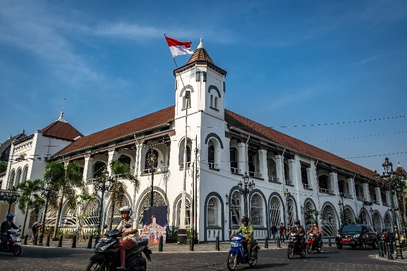
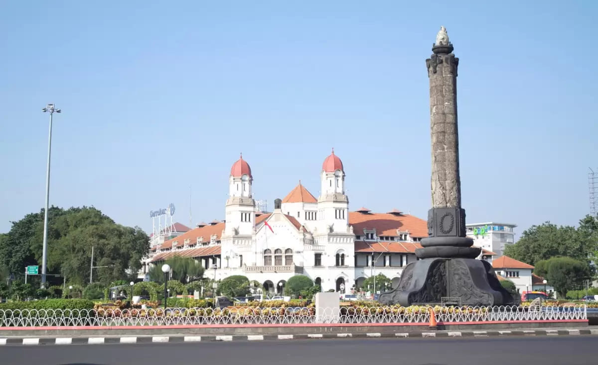
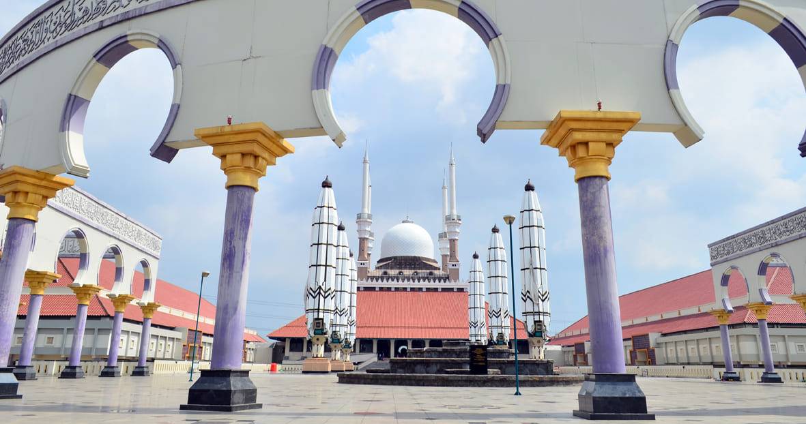
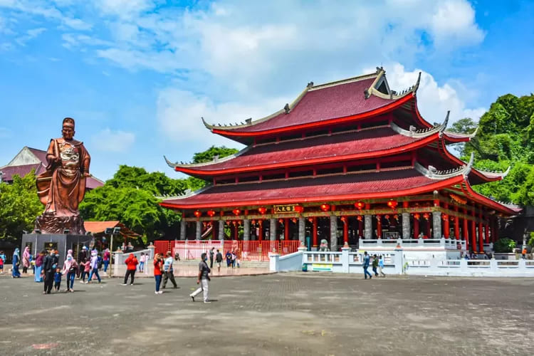
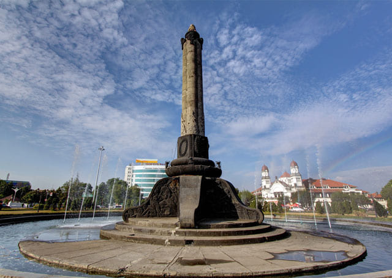

Sejarah Kota Semarang
Kota Semarang Jawa Tengah berawal kurang lebih pada Abad ke-8 M, yaitu daerah pesisir yang bernama Pragota (sekarang menjadi Bergota) dan merupakan bagian dari kerajaan Mataram Kuno.
Semarang adalah ibu kota provinsi Jawa Tengah, Indonesia. Kota ini adalah kota metropolitan terbesar kelima di Indonesia setelah Jakarta, Surabaya, Bandung, dan Medan.
Kota Semarang Jawa Tengah berawal kurang lebih pada Abad ke-8 M, yaitu daerah pesisir yang bernama Pragota (sekarang menjadi Bergota) dan merupakan bagian dari kerajaan Mataram Kuno.




